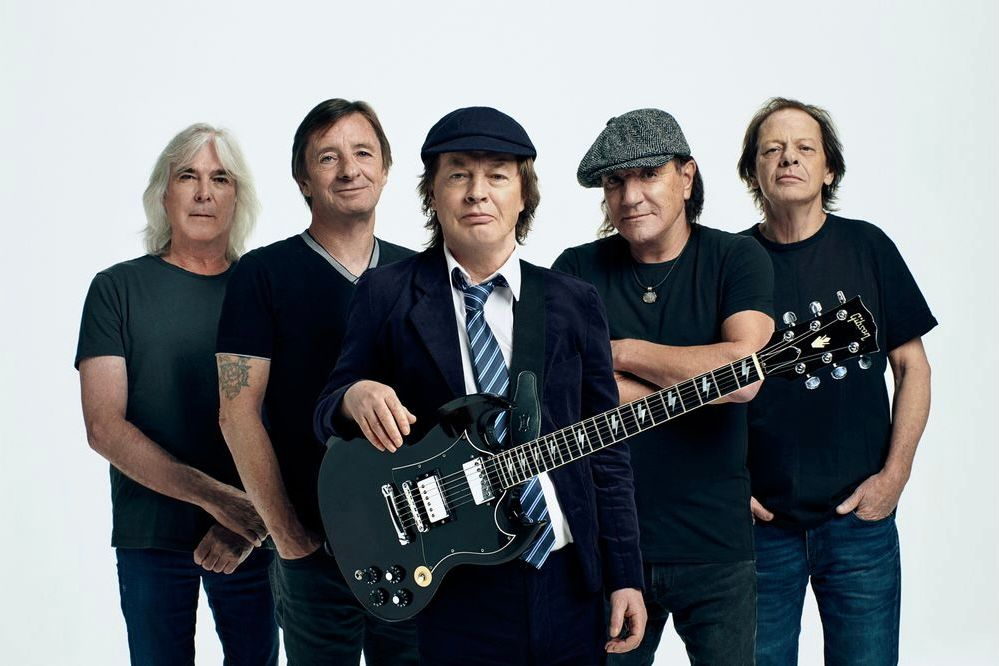

-
AC/DC

<활동당시 사진> 현재 70~80년대 액슬 로즈 재적시기  
국적 오스트레일리아 결성 1973년 11월 오스트레일리아 시드니 데뷔 1975년 2월 17일
(호주 데뷔일로부터 +17140일째)1976 4월 30일
(미국 데뷔일로부터 +16702일째)데뷔 앨범 High voltage 멤버 앵거스 영(리드기타) 스티비 영 (리듬기타) 필 러드 (드럼) 브라이언 존슨 (보컬) 클리프 윌리엄스 (베이스) 전 멤버 말콤 영 (리듬기타) 본 스콧 (보컬) 액슬 로즈 (보컬) 크리스 슬레이드 (드럼) 장르 록, 하드 록, 블루스 록 ,로큰 롤 소개
국내에서는 인지도가 낮지만, 세계적으로는 록 음악과 하드 록을 대표하는 밴드이다. 1973년 호주에서 말콤 영, 앵거스 영 형제를 중심으로 결성된 5인조 하드 록 밴드. 이들의 음악은 블루스 기반의 로큰롤에 뿌리를 두고 있다고 볼 수 있으며, AC/DC 하면 떠오르는 수식어 중 하나가 8비트 로큰롤이기도 하다.
공식적으로 2억 장 이상의 음반을 판매하여 역대 록밴드 음반 판매량 5위를 기록한[8] 록 음악계의 거물로, 특히 록 음악의 불모지와 같았던 호주 출신의 밴드라는 것을 감안하면 대단한 기록이다. 호주에서 비 지스와 함께 가장 인기있는 아티스트이며, 특히 아메리카 지역에서 워낙 유명하기에 미국이나 캐나다, 남아메리카에서는 길 가다가 AC/DC 티셔츠 입은 사람을 심심찮게 볼 수 있다.
록 역사에 상당한 업적을 남긴 밴드이며 1970~1980년대 하드 록과 헤비메탈에서 가장 영향력 있는 아티스트 중 하나로 자주 거론된다. 특히 Back in Black의 경우 하드 록 역사를 통틀어 매우 중요한 앨범이니 하드 록이나 헤비 메탈을 좋아한다면 한 번 쯤 전곡을 들어보는 것을 권한다.
결성 후 지금까지 40년의 세월동안 자신들의 뿌리인 블루지한 로큰롤에서 외도하지 않고 외길만 걸어온 밴드로, 다른 대부분의 밴드들이 짧게는 3~4년, 길어봐야 10~15년 정도만 활동하면서도 계속 장르를 바꾸는데 비하면 그야말로 대단한 장인들이라고 볼 수 있다. 그래서 초창기곡과 최근곡이 한결같이 비슷하게 들리기도 한다. 심지어 AC/DC는 1970년대부터 활동한 밴드임에도 불구하고 젊은 팬들이 굉장히 많은 밴드이다. 그만큼 세대를 아우르는 음악을 소화하는 밴드라는 것을 알 수 있다.
-
레드 제플린
-
건즈 앤 로지스